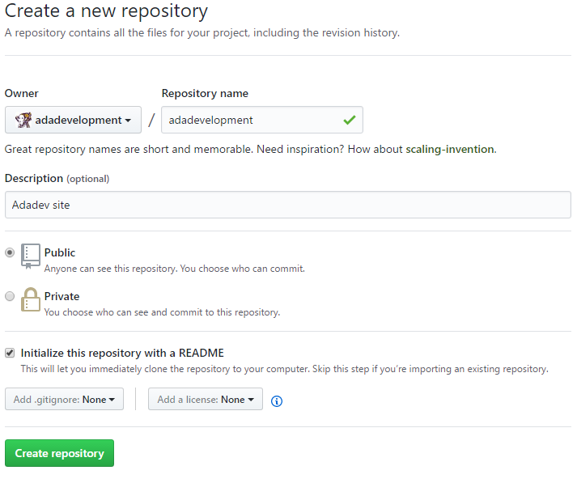
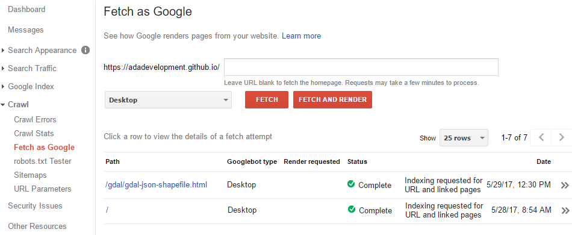

The Adadev website is hosted on Github Pages. Github offers free hosting for static sites, that is, only HTML pages with CSS and JavaScript. In this article I explain how to create a site hosted on Github for free and how to index your content on Google search.
First, you need an account on Github. Go to github.com and create an account. Go to "New repository": you will find this button easily, but it is also on + menu, in bottom right corner of the screen, next to profile.
The repository name should be equals your account user name. Provide an description and mark the "Initialize this repository with a README" option to avoid future work.
You can add, edit and remove files from repository only with Github interface, if you do not want to install Git. Add index.html and the other website files to your repository on master branch. You can add it by "Upload files" button. You can also open each file and edit by the "Edit this file" button, or you can remove it on "Delete this file". There is no option to delete the entire folder content yet, but after you remove all folder files, it is automatically removed.
Write an clean code, use the HTML tags correctly and use SEO practices (Search Engine Optimization) to improve your indexing on search tools.
That is all! A few minutes later you can access you site at user-name.github.io =)
To show your pages and site content on Google search immediately, go to Google Webmasters, login in your Google account and register your site. To verify that the site is yours, Google request a verify method, for example, adding a page to your site with a Google code. After registering, go to Search Console, click your site, access the "Crawl" / "Fetch as Google" menu. Search your pages and request the indexing. It is ready! Google your site =)
